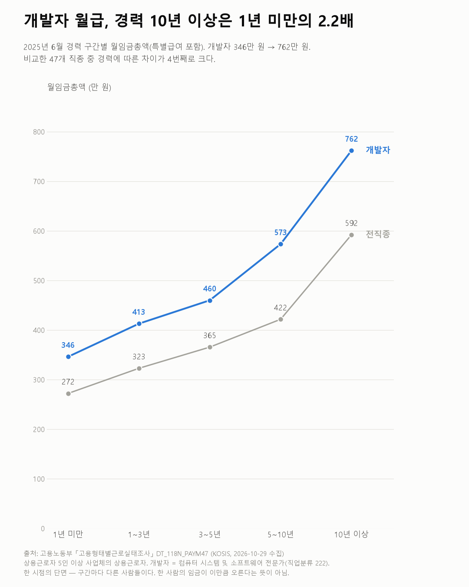
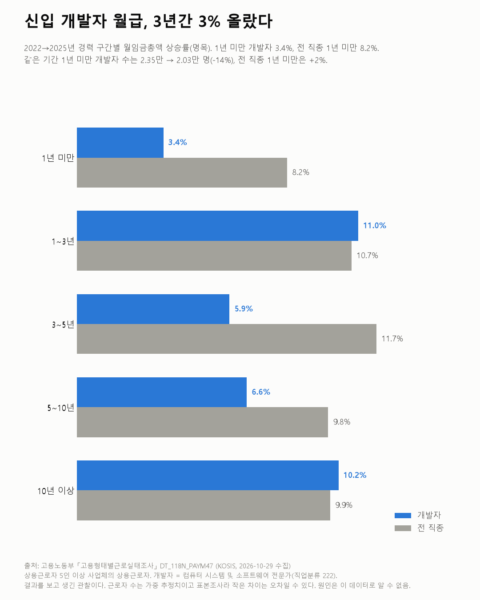

고용형태별근로실태조사
개발자 월급, 경력 10년 이상은 1년 미만의 2.2배
고용형태별근로실태조사 2022~2025

질문
소프트웨어 개발자의 월급은 경력에 따라 얼마나 다른가? 다른 직종과 비교하면 경력에 따른 차이가 큰 편인가?
사용 데이터와 출처
| 데이터 | 출처 | 쓰임 |
|---|---|---|
| 직종, 경력년수, 성별 임금 및 근로조건 (KOSIS DT_118N_PAYM47) | 고용노동부 「고용형태별근로실태조사」 | 직종·경력 구간별 월임금총액, 근로자 수 |
- 대상: 상용근로자 5인 이상 사업체의 상용근로자다(KOSIS 표 주석). 임시·일용직, 5인 미만 사업체, 프리랜서는 빠진다.
- 개발자: 한국표준직업분류 7차의 "컴퓨터 시스템 및 소프트웨어 전문가"(222)다. 이 직종은 2022년부터 따로 공표된다.
- 월임금총액: 정액급여 + 초과급여 + 전년도 연간 특별급여 ÷ 12다. 매년 6월 기준이다.
- 수집일: 2026-10-29 (KOSIS 오픈API). 성별은 '전체'만 받았다.
- 검증: 경력 구간 근로자 수 합은 전경력과 0.3% 이내로 같고, 소분류 합은 중분류와 0.01% 이내로 같다.
- 교차 확인: 이 표의 전직종 월임금총액은 2020년 376만 원이다. 한국노동연구원이 정리한 같은 조사의 전체 근로자 기준 318만 원보다 높다. 이 표는 상용 5인 이상만 대상으로 하기 때문이다.
인사이트
1. 경력 10년 이상 개발자의 월급은 1년 미만의 2.2배다. 2025년 경력 1년 미만 개발자는 월 346만 원, 10년 이상은 762만 원이다. 근로자가 5만 명 이상인 47개 직종 중 경력에 따른 차이가 4번째로 크다. 1~3위는 대학교수 및 강사(4.6배), 금융 사무(2.5배), 운송차량 조립원(2.4배)이다.
2. 모든 경력 구간에서 전 직종보다 높다. 개발자는 1년 미만에서 전 직종(272만 원)보다 27% 높다. 10년 이상에서는 전 직종(592만 원)보다 29% 높다.
3. 2022년 이후 신입 개발자 월급은 덜 올랐다. (결과를 보고 생긴 관찰이다.) 2022년부터 2025년까지 경력 1년 미만 개발자의 월임금총액은 3.4% 올랐다. 같은 기간 전 직종 1년 미만은 8.2% 올랐다. 경력 3~5년(5.9% 대 11.7%)과 5~10년(6.6% 대 9.8%)도 전 직종보다 덜 올랐다. 1~3년과 10년 이상은 비슷했다. 같은 기간 1년 미만 개발자 수는 2.35만 명에서 2.03만 명으로 14% 줄었다. 전 직종 1년 미만은 2% 늘었다.

한계
이 데이터로 말할 수 없는 것
- 한 시점의 단면이다. "1년 미만"과 "10년 이상"은 서로 다른 사람들이다. 한 사람이 10년 일하면 2.2배가 된다는 뜻이 아니다.
- 경력년수의 정의를 확인하지 못했다. 현 직장 근속인지 같은 직종 경력인지는 KOSIS 표 주석에 없다.
- 상용 5인 이상만이다. 스타트업 초기(5인 미만), 계약직, 프리랜서 개발자는 빠진다. 프리랜서 개발자는 1인 미디어 창작자 글의 소프트웨어 프리랜서(2024년 1인당 4,146만 원/년)를 참고할 수 있다. 다만 기준이 다르다.
- 직종 범위가 넓다. 222에는 앱·웹 개발자 외에 시스템 설계, 소프트웨어 엔지니어 등이 함께 들어 있다.
- 표본조사다. 근로자 수는 가중 추정치다. 경력 구간별 몇 %p 차이는 오차일 수 있다.
- 원인은 말하지 않는다. 신입 개발자 월급이 덜 오르고 인원이 줄어든 이유(채용 시장, 기업 규모 구성 변화 등)는 이 데이터로 알 수 없다.
- 금액은 명목이다.
전제 기록
데이터를 보기 전에 적어둔 것, 그리고 보고 나서 바꾼 것
- 전제 기록(premises)(데이터를 받기 전에 작성)를 따랐다.
- 데이터를 보고 확인하거나 바꾼 것:
- 대상 범위가 상용 5인 이상이라는 것을 확인했다.
- 소분류 직종이 2022년부터만 있다는 것을 확인했다.
- 경력 정의는 확인하지 못했다.
- 인사이트 3은 탐색 중에 생긴 관찰이다.